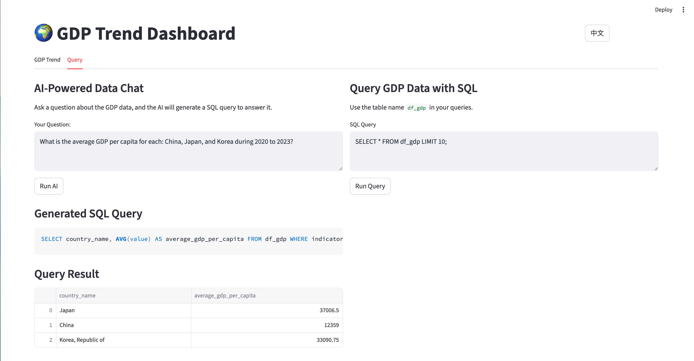

flowchart TD
A[世界银行 API] --> B[数据采集<br/>download_data.py]
B --> C[数据处理<br/>国家映射、指标计算]
C --> D[数据存储<br/>CSV 文件]
D --> E[Streamlit 应用<br/>app.py]
E --> F[DuckDB<br/>内存 SQL]
F --> G[可视化引擎<br/>Plotly Express]
F --> H[AI 查询引擎<br/>ModelScope API]
F --> I[会话管理<br/>用户状态]
G --> J[交互式图表]
H --> K[自然语言<br/>转 SQL]
I --> L[持久化<br/>查询结果]
J --> M[用户界面]
K --> M
L --> M
使用 AI SQL 构建的交互式 GDP 趋势看板
Data Visualization
Streamlit
Economic Analysis
AI
项目概览
GDP 趋势看板 (GDP Trend Dashboard) 是一个复杂的 Web 应用程序，用于可视化和分析来自世界银行 API 的经济数据。该系统的独特之处在于其双重方法：将传统的交互式可视化与 AI 驱动的自然语言查询相结合，使技术分析师和普通用户都能轻松获取经济数据。
在线演示：https://world-GDP-trend.streamlit.app
Github：https://github.com/JCwinning/GDP_trend
交互式全球 GDP 趋势可视化

交互式 AI 驱动的自然语言转 SQL

AI 生成的经济数据洞见摘要

核心架构
技术栈
- 主要框架：用于交互式 Web 应用的 Streamlit
- 数据处理：用于数据操作和分析的 Pandas
- 可视化：用于交互式图表的 Plotly Express
- 数据库：用于高效 SQL 查询的 DuckDB
- AI 集成：用于自然语言转 SQL 的 ModelScope GLM-4.6
- 数据源：通过
wbgapi库调用的世界银行 API
关键特性
- 多国 GDP 趋势对比
- 支持多种经济指标（GDP、人均 GDP、人口、同比增长率）
- AI 驱动的自然语言查询
- 使用 DuckDB 的直接 SQL 接口
- 完善的双语支持（中/英文）
- 带交互控制的时间范围筛选（2000年至今）
数据流水线架构
该应用程序实现了一个复杂的数据流水线，以确保数据质量和实时可用性：
数据采集与处理
世界银行 API 集成
应用程序使用世界银行 API 采集全面的经济数据：
Code
import wbgapi as wb
import pycountry
import pandas as pd
def download_economic_data():
"""从世界银行 API 下载所有国家的 GDP 数据"""
# 定义要下载的经济指标
indicators = {
'gdp_current_usd': 'NY.GDP.MKTP.CD',
'gdp_per_capita_current_usd': 'NY.GDP.PCAP.CD',
'population_total': 'SP.POP.TOTL'
}
# 下载 2000 年至今的数据
data_frames = []
for indicator_name, indicator_code in indicators.items():
df = wb.get_series(
series=indicator_code,
economy='all',
time='2000:2024',
simplify_index=True
)
# 处理并添加到集合
df = df.reset_index()
df['indicator'] = indicator_name
data_frames.append(df)
# 合并所有指标
combined_df = pd.concat(data_frames, ignore_index=True)
return combined_df
def create_country_reference_table():
"""创建包含 ISO 代码的完整国家元数据表"""
countries = list(pycountry.countries)
df_all = pd.DataFrame([{
'country_name': country.name,
'country_code_2': country.alpha_2,
'country_code_3': country.alpha_3
} for country in countries])
# 添加大洲映射
iso_to_continent = {
"US": "North America", "CN": "Asia", "JP": "Asia",
"DE": "Europe", "GB": "Europe", "FR": "Europe"
# ... 为所有国家完成映射
}
df_all['continent'] = df_all['country_code_2'].map(iso_to_continent)
return df_all数据模式与结构
应用程序使用清晰、规范化的数据结构：
Code
-- 主要数据模式
CREATE TABLE df_gdp (
country_name TEXT, -- 显示名称 (英文)
country_code_2 TEXT, -- ISO alpha-2 代码
country_code_3 TEXT, -- ISO alpha-3 代码
continent TEXT, -- 大洲分类
year INTEGER, -- 数据年份
indicator TEXT, -- 经济指标名称
value REAL -- 指标数值
);
-- 示例数据
INSERT INTO df_gdp VALUES
('United States', 'US', 'USA', 'North America', 2023, 'gdp_current_usd', 27444144.3),
('United States', 'US', 'USA', 'North America', 2023, 'gdp_per_capita_current_usd', 81254.2),
('United States', 'US', 'USA', 'North America', 2023, 'population_total', 334914895.0);交互式可视化系统
Plotly Express 实现
应用程序使用 Plotly Express 创建交互式图表，并保持一致的颜色编码：
Code
import plotly.express as px
@st.cache_data
def load_data():
"""加载并缓存 GDP 数据"""
return pd.read_csv('data/gdp_data_2000_present.csv')
def create_gdp_trend_chart(selected_countries, selected_indicator, year_range):
"""创建交互式 GDP 趋势可视化"""
# 加载筛选后的数据
df = load_data()
# 应用筛选条件
filtered_df = df[
(df['country_name'].isin(selected_countries)) &
(df['indicator'] == selected_indicator) &
(df['year'].between(year_range[0], year_range[1]))
]
# 创建交互式折线图
fig = px.line(
filtered_df,
x='year',
y='value',
color='country_name',
title=f'{selected_indicator.replace("_", " ").title()} 趋势',
labels={
'year': '年份',
'value': format_indicator_label(selected_indicator),
'country_name': '国家'
}
)
# 自定义图表外观
fig.update_layout(
xaxis_title="年份",
yaxis_title=format_indicator_label(selected_indicator),
hovermode='x unified',
showlegend=True,
legend=dict(
orientation="h",
yanchor="bottom",
y=1.02,
xanchor="right",
x=1
)
)
return fig
def format_indicator_label(indicator):
"""格式化指标名称以供显示"""
labels = {
'gdp_current_usd': 'GDP (现价美元)',
'gdp_per_capita_current_usd': '人均 GDP (现价美元)',
'population_total': '总人口',
'gdp_per_capita_current_usd_yoy': '人均 GDP 同比增长率 (%)'
}
return labels.get(indicator, indicator.replace('_', ' ').title())AI 驱动的分析
自然语言转 SQL
该程序最具创新性的功能是 AI 驱动的自然语言查询：
Code
from openai import OpenAI
import duckdb
def generate_sql_from_question(question, language):
"""使用 ModelScope API 将自然语言问题转换为 SQL 查询"""
# 获取数据库模式上下文
schema_info = """
表名: df_gdp
列名:
- country_name (TEXT): 国家显示名称
- country_code_2 (TEXT): ISO alpha-2 国家代码
- continent (TEXT): 大洲分类
- year (INTEGER): 数据年份 (2000-2024)
- indicator (TEXT): 经济指标名称
- value (REAL): 指标数值
可用指标:
- gdp_current_usd: 现价 GDP (美元)
- gdp_per_capita_current_usd: 现价人均 GDP (美元)
- population_total: 总人口
- gdp_per_capita_current_usd_yoy: 人均 GDP 同比增长率 (%)
"""
# 创建特定语言的提示词
if language == "zh":
prompt = f"""请将以下自然语言问题转换为SQL查询，仅返回SQL语句，不要解释。
数据库信息：
{schema_info}
用户问题：{question}
要求：
1. 只返回标准的SELECT语句
2. 不要添加任何解释或注释
3. 使用LIMIT 50限制结果数量"""
else:
# (保持原英文 prompt)
prompt = f"""Convert the following natural language question to SQL query. Return only the SQL statement, no explanation.
Database information:
{schema_info}
User question: {question}
Requirements:
1. Return only standard SELECT statement
2. Do not add any explanation or comments
3. Use LIMIT 50 to restrict results"""
# 调用 ModelScope API
client = OpenAI(
api_key=os.getenv('MODELSCOPE_API_KEY'),
base_url="https://dashscope.aliyuncs.com/compatible-mode/v1"
)
response = client.chat.completions.create(
model="qwen/Qwen3-235B",
messages=[{"role": "user", "content": prompt}],
temperature=0.1, # 使用低温度以获得一致的 SQL
max_tokens=500
)
return response.choices[0].message.content.strip()查询执行与 AI 摘要
Code
def execute_query_with_ai_summary(sql_query, original_question):
"""执行 SQL 查询并生成 AI 摘要"""
try:
# 使用 DuckDB 执行查询
conn = duckdb.connect()
result_df = conn.execute(sql_query).fetchdf()
# 将结果存入会话状态
st.session_state.sql_result = result_df
st.session_state.sql_query = sql_query
# 如果有数据，生成 AI 摘要
if not result_df.empty:
generate_ai_summary(result_df, original_question)
return result_df
except Exception as e:
st.error(f"查询执行错误: {str(e)}")
return None
def generate_ai_summary(data_frame, question):
"""生成查询结果的 AI 摘要"""
# 将 DataFrame 转换为文本以便分析
data_summary = data_frame.to_string(index=False)
summary_prompt = f"""根据以下数据分析结果，提供一个简明扼要的摘要：
原始问题：{question}
查询结果：
{data_summary}
请提供：
1. 关键发现的简要分析
2. 任何值得注意的趋势或模式
3. 来自数据的重要见解
请将摘要控制在 200 字以内，并确保通俗易懂。"""
# 使用 AI 生成摘要
client = OpenAI(
api_key=os.getenv('MODELSCOPE_API_KEY'),
base_url="https://dashscope.aliyuncs.com/compatible-mode/v1"
)
response = client.chat.completions.create(
model="qwen/Qwen3-235B",
messages=[{"role": "user", "content": summary_prompt}],
temperature=0.3,
max_tokens=300
)
st.session_state.ai_summary = response.choices[0].message.content双语支持系统
国际化架构
应用程序实现了全面的中/英文支持：
Code
# language.py - 完整的翻译系统
translations = {
"en": {
"title": "🌍 GDP Trend Dashboard",
"gdp_trend": "GDP Trend",
"ai_powered_chat": "AI-Powered Data Chat",
"default_question": "What is the average GDP per capita for China, Japan, and Korea during 2020 to 2023?"
},
"zh": {
"title": "🌍 GDP 趋势看板",
"gdp_trend": "GDP 趋势",
"ai_powered_chat": "AI 数据对话",
"default_question": "2020年至2023年期间，中国、日本和韩国的平均人均GDP是多少？"
}
}
def get_text(key):
"""获取当前语言的翻译文本"""
language = st.session_state.get("language", "en")
return translations.get(language, {}).get(key, key)
# UI 中的语言切换
col1, col2 = st.columns([1, 1])
with col1:
if st.button("English"):
st.session_state.language = "en"
st.rerun()
with col2:
if st.button("中文"):
st.session_state.language = "zh"
st.rerun()用户界面设计
主应用程序结构
Code
def main():
"""采用标签页导航的主应用程序"""
# 右上角的语言切换
with st.container():
st.markdown("""
<div class="language-toggle">
<button onclick="setLanguage('en')">EN</button>
<button onclick="setLanguage('zh')">中文</button>
</div>
""", unsafe_allow_html=True)
st.title(get_text("title"))
# 标签页界面
tab1, tab2 = st.tabs([get_text("gdp_trend"), get_text("query")])
with tab1:
render_gdp_trends_tab()
with tab2:
render_query_interface_tab()
def render_gdp_trends_tab():
"""渲染 GDP 趋势可视化标签页"""
st.header(get_text("gdp_trend"))
# 加载数据
df = load_data()
# 筛选控制
col1, col2, col3 = st.columns([2, 1, 1])
with col1:
selected_countries = st.multiselect(
get_text("select_countries"),
options=df['country_name'].unique(),
default=['United States', 'China', 'Japan']
)
with col2:
selected_indicator = st.selectbox(
get_text("select_indicator"),
options=[
'gdp_current_usd',
'gdp_per_capita_current_usd',
'population_total',
'gdp_per_capita_current_usd_yoy'
],
format_func=lambda x: format_indicator_label(x)
)
with col3:
year_range = st.slider(
get_text("select_year_range"),
min_value=2000,
max_value=2024,
value=(2010, 2024),
step=1
)
# 生成并显示图表
if selected_countries and selected_indicator:
fig = create_gdp_trend_chart(selected_countries, selected_indicator, year_range)
st.plotly_chart(fig, use_container_width=True)
# 显示原始数据选项
if st.checkbox(get_text("show_raw_data")):
display_filtered_data_table(selected_countries, selected_indicator, year_range)
def render_query_interface_tab():
"""渲染 AI 驱动的查询界面标签页"""
st.header(get_text("ai_powered_chat"))
st.markdown(get_text("ai_chat_description"))
# 自然语言输入
user_question = st.text_input(
get_text("your_question"),
value=st.session_state.get("user_question", get_text("default_question"))
)
col1, col2 = st.columns([1, 1])
with col1:
if st.button(get_text("run_ai"), type="primary"):
if user_question:
with st.spinner("AI 正在处理..."):
# 从自然语言生成 SQL
sql_query = generate_sql_from_question(
user_question,
st.session_state.language
)
if sql_query:
# 执行查询并生成摘要
result_df = execute_query_with_ai_summary(sql_query, user_question)
st.session_state.user_question = user_question
st.session_state.should_generate_ai_summary = True
# 显示结果
if st.session_state.get("sql_result") is not None:
display_query_results()性能优化
数据缓存与效率
Code
# Streamlit 数据操作缓存
@st.cache_data(ttl=3600) # 缓存 1 小时
def load_data():
"""加载并缓存 GDP 数据"""
return pd.read_csv('data/gdp_data_2000_present.csv')
@st.cache_data(ttl=1800) # 缓存 30 分钟
def get_country_list():
"""获取并缓存唯一的国家列表"""
df = load_data()
return sorted(df['country_name'].unique())
# AI 交互的会话状态管理
def init_session_state():
"""初始化所有会话状态变量"""
if "sql_result" not in st.session_state:
st.session_state.sql_result = None
if "ai_summary" not in st.session_state:
st.session_state.ai_summary = None
if "should_generate_ai_summary" not in st.session_state:
st.session_state.should_generate_ai_summary = False错误处理与用户体验
Code
def safe_api_call(func, *args, **kwargs):
"""带错误处理的安全 API 调用"""
try:
return func(*args, **kwargs)
except Exception as e:
st.error(f"API 错误: {str(e)}")
return None
def validate_sql_query(sql_query):
"""基础 SQL 查询验证"""
sql_lower = sql_query.lower().strip()
# 基础安全检查
dangerous_keywords = ['drop', 'delete', 'update', 'insert', 'alter']
for keyword in dangerous_keywords:
if keyword in sql_lower:
raise ValueError(f"检测到危险 SQL 关键字: {keyword}")
# 确保查询以 SELECT 开头
if not sql_lower.startswith('select'):
raise ValueError("仅允许执行 SELECT 查询")
return True部署与可访问性
环境配置
# 环境配置
# .env 文件
MODELSCOPE_API_KEY=your_modelscope_key
# 安装依赖
pip install -r requirements.txt
# 数据采集
python download_data.py
# 运行应用程序
streamlit run app.py必需的依赖项
streamlit>=1.28.0
pandas>=1.5.0
plotly>=5.15.0
duckdb>=0.8.0
openai>=1.0.0
python-dotenv>=1.0.0
wbgapi>=1.0.0
pycountry>=22.0.0
numpy>=1.24.0技术亮点
关键创新点
- 双界面方案：同时提供视觉和自然语言访问数据的方式
- AI 驱动的 SQL 生成：使用简单的中/英文即可进行复杂的经济查询
- 实时数据处理：高效的缓存和会话管理
- 全面的国际化：真正的双语支持及本地化数据显示
- 生产就绪的部署：完善的错误处理和性能优化
经济分析示例
支持的查询类型
- 对比分析
- “对比 2010 年至 2020 年中国和日本的 GDP 增长”
- “2023 年哪些国家的人均 GDP 最高？”
- 时序分析
- “显示过去十年金砖国家的 GDP 趋势”
- “2000 年至 2020 年印度的人口增长率是多少？”
- 统计查询
- “计算欧洲国家的平均 GDP 增长率”
- “找出 2022 年人均 GDP 超过 50,000 美元的国家”
- 复杂多变量分析
- “亚洲国家的人口与 GDP 之间有什么相关性？”
- “列出连续 3 年人均 GDP 增长超过 5% 的国家”
结论
这个 GDP 趋势看板代表了经济数据分析的创新方法，将传统的视觉化技术与尖端的 AI 能力相结合。该项目展示了：
- 先进的数据集成：集成世界银行 API 与全面的经济指标
- 自然语言处理：AI 驱动的 SQL 生成，实现便捷的数据查询
- 专业的视觉化：采用一致设计的交互式 Plotly 图表
- 双语支持：完整的英/中本地化
- 生产级架构：稳健的错误处理、缓存和部署
无论您是经济学家、数据科学家还是政策分析师，该应用程序都展示了现代 AI 技术如何通过直观的界面和智能自动化，使复杂的经济数据变得更加易于获取和利用。
技术栈：Streamlit, DuckDB, Plotly, ModelScope API, World Bank API
数据源：世界银行 (2000-2024, 200+ 国家, 15,000+ 数据点)